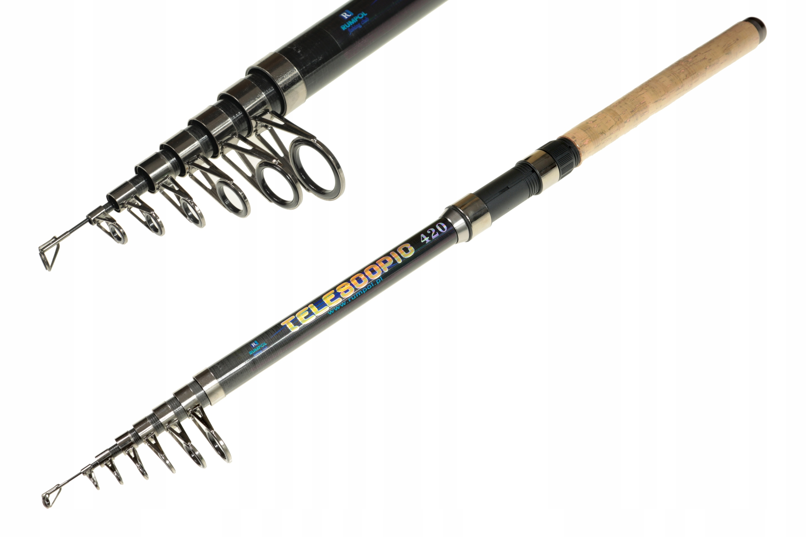
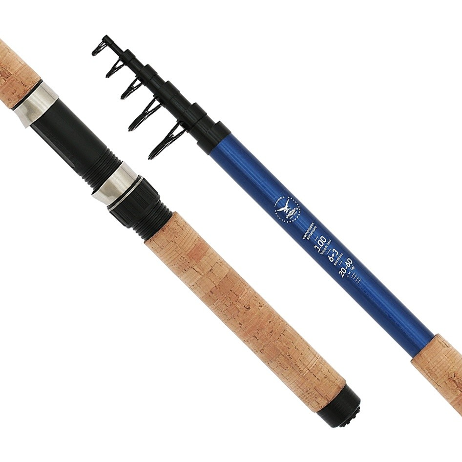
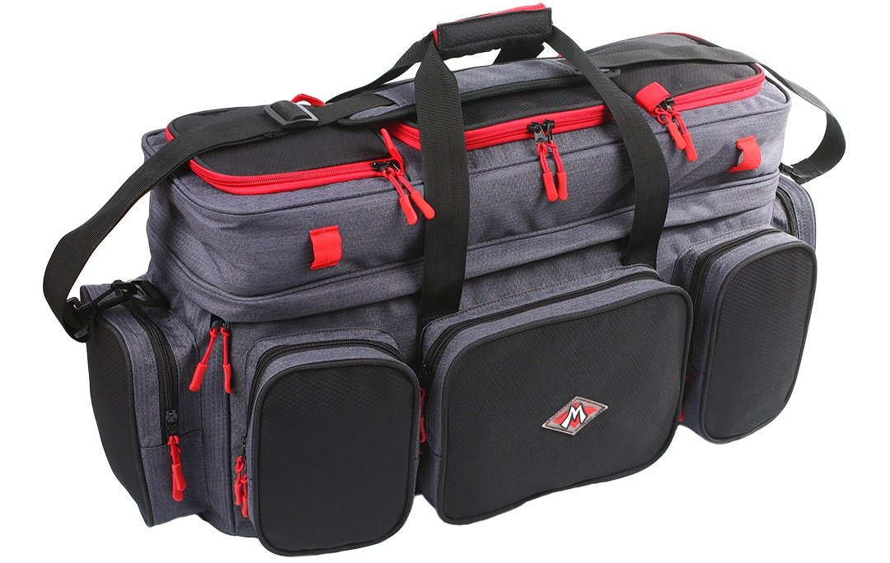
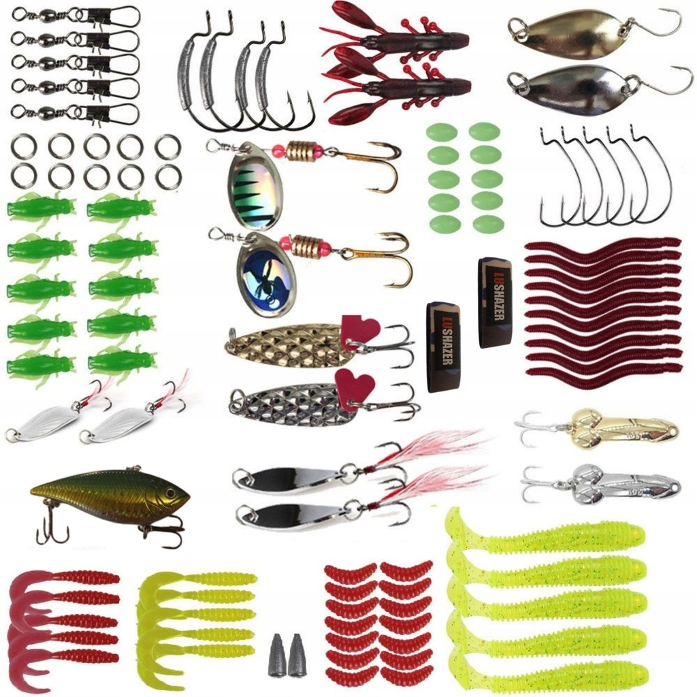

Strona główna
Powiaty
Powiat Wrocławski
----------Wybierz koło----------
Koło wędkarskie 122 Astra
Koło wędkarskie Ciernik Bolesławiec
Koło wędkarskie, Koło nr 41
Wędkarskie Centrum Krokodyl
Koło PZW nr 109 REKIN
Koło PZW nr 116 KAPITAN
Przejdź do okręgu
Powiat Wałbrzyski
----------Wybierz koło----------
Okręg Polskiego Związku Wedkarskiego W Wałbrzychu
Koło Wałbrzych Lokomotywa
Koło Wałbrzych THOREZ
Koło Wałbrzych Zak.Koksownicze
Przejdź do okręgu
Sprzęt wędkarski
Przejdź do podstrony



